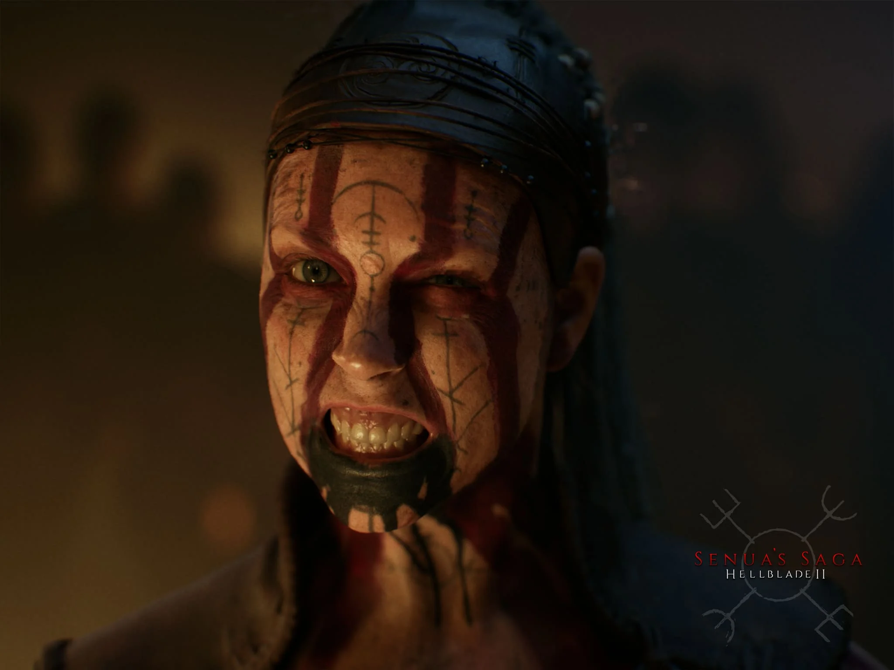

Essas são as nossas recomendações
007 First Light
007 First Light apresenta uma nova abordagem para o universo de James Bond, mostrando a origem do famoso agente em uma aventura de espionagem repleta de ação, infiltração e decisões estratégicas. Desenvolvido pela IO Interactive, o jogo combina mecânicas de furtividade, combate e exploração, oferecendo uma experiência cinematográfica que promete agradar tanto aos fãs da franquia 007 quanto aos amantes de jogos de ação e aventura. Veja uma gameplay abaixo:
Pontos Positivos
- Excelente ambientação de espionagem.
- Gráficos modernos e detalhados.
- Mecânicas de furtividade e ação bem equilibradas.
- Narrativa focada na origem de James Bond.
Pontos Negativos
- Mal otimização para PC.
- O inimigos são pouco desafiadores e muitas vezes ignoram atividades suspeitas.
- Falta de dublagem, o jogo conta apenas com legendas em português.
- A durabilidade do jogo, podendo terminar ate em menos de 15 horas.

Senua's Saga: Hellblade II
Na sequência do premiado Hellblade: Senua's Sacrifice, Senua retorna em uma jornada brutal de sobrevivência através dos mitos e tormentos da Islândia Viking. Determinada a salvar aqueles que foram vítimas dos horrores da tirania, Senua enfrenta uma batalha para vencer a escuridão dentro e fora de si.
Pontos Positivos
- Graficos muito realista e um exelente trabalho da Ninja Theory na direção de arte.
- O audio desing binaural e a trilha sonora é um ponto bem forte, recomendamos jogar de headset.
- Narrativa e atuação muito boa da Melina Juergens que é quem da a vida a Senua.
- Combate Realista.
Pontos Negativos
- Pouca gameplay , parece as vezes um "filme interativo".
- Linearidade Excessiva.
- Puzzles Repetitivos.
- Durabilidade com cerca de 7 a 9 horas.